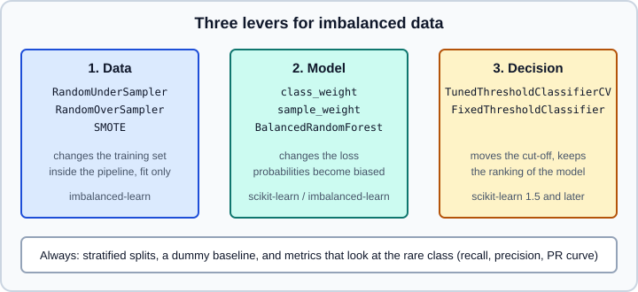
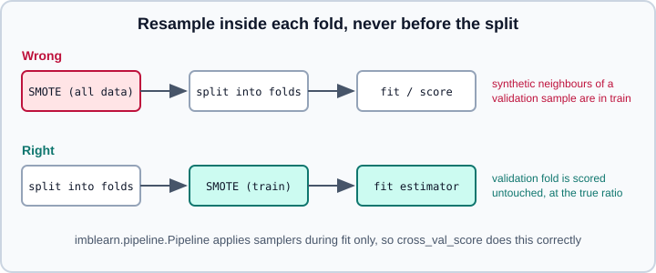

Imbalanced Data: class_weight, Thresholds & imbalanced-learn
|
This content was generated with the assistance of AI and should be verified against the official documentation before being relied on in production. |
A fraud detector, a defect classifier or a disease screen has one thing in common: the class you care about is rare. A model that always answers "no" is then right 97 per cent of the time and useless. This page collects what scikit-learn offers for that situation and where the companion library imbalanced-learn adds to it: evaluation that looks at the rare class, stratified splitting, reweighting the loss with class_weight and sample_weight, balanced ensembles, moving the decision threshold, and resampling. It ends with the mistakes that make imbalanced results look better than they are.
Examples were run on Python 3.13 with scikit-learn 1.9.1, imbalanced-learn 0.14.2 and NumPy 2.5.4 on 2026-10-31.
The topics that this page builds on are not repeated: the threshold tuners are explained in Tuning the Decision Threshold, the metrics in Metrics & Scoring, probability quality in Probability Calibration, splitting in Cross-Validation & Splitters and Train/Test Split, and leakage in Common Pitfalls. The class-imbalance discussion that is independent of scikit-learn is in Model Evaluation & Validation. The multiclass strategies, where imbalance is just as common, are in Multiclass, Multilabel & Multioutput Strategies.
Three levers and one rule
Imbalance can be attacked in three places, shown in the figure, and they can be combined.

-
The data: change how many examples of each class the model sees (resampling).
-
The model: change how much an error on each class costs (class weights, sample weights, balanced ensembles).
-
The decision: keep the model, change where the score is cut into a label (threshold).
The rule that precedes all three is about measurement: choose a metric that reflects the cost of the errors you actually have, and compare every approach with a baseline that ignores the features. Without that, a "fix" for imbalance can only be judged by the number it was designed to move.
Reweighting and thresholding are usually the first things to try because they need no new library, do not touch the data, and cannot leak. Resampling is the most discussed technique and, as the experiments below show, often adds little on top of them with a strong model.
The data used in the examples
The examples use a synthetic binary problem with a 3.4 per cent positive class, built with make_classification. It is deliberately hard: the classes overlap, so no method reaches a high score and the differences between approaches are visible.
import numpy as np
from sklearn.datasets import make_classification
from sklearn.model_selection import train_test_split
X, y = make_classification(n_samples=20000, n_features=10, n_informative=4,
weights=[0.97, 0.03], class_sep=0.8, flip_y=0.01,
random_state=0)
X_train, X_test, y_train, y_test = train_test_split(X, y, stratify=y, random_state=0)
print("positives in train/test:", y_train.sum(), y_test.sum(), round(y.mean(), 4))positives in train/test: 513 171 0.0342
Source: https://scikit-learn.org/stable/modules/generated/sklearn.model_selection.train_test_split.html
stratify=y makes both parts keep the class proportions. Without it a random split of a rare class can put noticeably more or fewer positives in the test set, and with a few hundred positives the metrics then move for reasons unrelated to the model. For cross-validation, StratifiedKFold does the same, and it is the default for classifiers when cv is an integer. Repeat it (RepeatedStratifiedKFold) when the rare class has only a few dozen examples, because a single 5-fold split then gives very noisy estimates. Groups of related rows still need StratifiedGroupKFold; see the cross-validation page.
Measure the rare class
Accuracy is a poor guide when one class dominates. The metrics that are worth looking at, all in sklearn.metrics:
-
Recall (sensitivity, true positive rate) of the rare class: the share of real positives found.
-
Precision of the rare class: the share of alarms that are real. Together, recall and precision describe the trade-off a threshold controls.
-
balanced_accuracy_score: the mean of the recall of each class, so a model that always predicts the majority class scores 0.5 whatever the imbalance. -
average_precision_score(area under the precision-recall curve): ranks the model across all thresholds and, unlike ROC AUC, depends directly on how hard it is to find the positives among many negatives.PrecisionRecallDisplayplots the curve. -
f1_scoreandfbeta_score: one number at a fixed threshold;betaabove 1 favours recall, below 1 precision. -
matthews_corrcoef: a single value that stays informative when the classes are very unequal. -
roc_auc_score: useful for ranking quality but optimistic under heavy imbalance, because a large number of true negatives keeps the false positive rate small even when most alarms are false. -
brier_score_lossandlog_loss: quality of the probabilities, which reweighting damages (see below).
The scikit-learn estimators have one more trap here: DummyClassifier(strategy="prior") is the baseline against which each number must be read.
from sklearn.dummy import DummyClassifier
from sklearn.metrics import accuracy_score, average_precision_score
dummy = DummyClassifier(strategy="prior").fit(X_train, y_train)
print("dummy accuracy", round(accuracy_score(y_test, dummy.predict(X_test)), 4),
"AP", round(average_precision_score(y_test, dummy.predict_proba(X_test)[:, 1]), 3))dummy accuracy 0.9658 AP 0.034
The baseline reaches 96.6 per cent accuracy and an average precision equal to the prevalence (0.034). Any real model must beat both: an average precision of 0.2 is six times better than chance here even though it looks small, whereas an accuracy of 0.97 is no better than doing nothing. Average precision of a random scorer equals the share of positives, which is why PR metrics always need the prevalence next to them.
imbalanced-learn adds geometric_mean_score (the geometric mean of the per-class recalls), sensitivity_specificity_support and classification_report_imbalanced in imblearn.metrics; they are conveniences, not new ideas.
class_weight and sample_weight
Most scikit-learn classifiers minimise a sum of per-sample losses. If positives are rare, that sum is dominated by the negatives and the cheapest solution is to ignore the positives. Giving every sample of the rare class a larger weight restores their influence.
class_weight is a constructor parameter of many classifiers: LogisticRegression, LinearSVC, SVC, SGDClassifier, RidgeClassifier, Perceptron, DecisionTreeClassifier, ExtraTreesClassifier, RandomForestClassifier and, since scikit-learn 1.2, HistGradientBoostingClassifier. It accepts:
-
None(default): every class has weight 1. -
"balanced": weight of class \(k\) is \(\frac{n}{K \cdot n_k}\), with \(n\) the number of samples, \(K\) the number of classes and \(n_k\) the count of class \(k\). Each class then carries the same total weight. -
a dict
{label: weight}: explicit weights, for example when a missed positive costs 20 times a false alarm. -
for
RandomForestClassifierandExtraTreesClassifieralso"balanced_subsample", which recomputes the balanced weights on each tree’s bootstrap sample.
Estimators without a class_weight parameter, for example GradientBoostingClassifier and AdaBoostClassifier, accept the same effect through the sample_weight argument of fit. compute_class_weight and compute_sample_weight in sklearn.utils.class_weight produce the numbers.
import numpy as np
from sklearn.linear_model import LogisticRegression
from sklearn.metrics import (accuracy_score, average_precision_score, balanced_accuracy_score,
brier_score_loss, precision_score, recall_score)
from sklearn.utils.class_weight import compute_class_weight, compute_sample_weight
def report(name, clf):
pred = clf.predict(X_test)
proba = clf.predict_proba(X_test)[:, 1]
print(f"{name:24s} acc={accuracy_score(y_test, pred):.3f} "
f"bal_acc={balanced_accuracy_score(y_test, pred):.3f} "
f"recall={recall_score(y_test, pred):.3f} precision={precision_score(y_test, pred, zero_division=0):.3f} "
f"AP={average_precision_score(y_test, proba):.3f} "
f"Brier={brier_score_loss(y_test, proba):.4f} mean_p={proba.mean():.3f}")
plain = LogisticRegression(max_iter=1000).fit(X_train, y_train)
balanced = LogisticRegression(max_iter=1000, class_weight="balanced").fit(X_train, y_train)
report("plain", plain)
report("class_weight='balanced'", balanced)
print(compute_class_weight("balanced", classes=np.unique(y_train), y=y_train))
sample_weight = compute_sample_weight("balanced", y_train)
by_sample = LogisticRegression(max_iter=1000).fit(X_train, y_train, sample_weight=sample_weight)
print("same coefficients as class_weight:", np.allclose(by_sample.coef_, balanced.coef_, atol=1e-4))plain acc=0.965 bal_acc=0.500 recall=0.000 precision=0.000 AP=0.210 Brier=0.0304 mean_p=0.034 class_weight='balanced' acc=0.687 bal_acc=0.669 recall=0.649 precision=0.069 AP=0.150 Brier=0.2055 mean_p=0.433 [ 0.51770553 14.61988304] same coefficients as class_weight: True
Source: https://scikit-learn.org/stable/modules/generated/sklearn.linear_model.LogisticRegression.html
(The 15,000-row training set gives the weights \(15000 / (2 \cdot 14{,}487) \approx 0.518\) and \(15000 / (2 \cdot 513) \approx 14.62\).) Read the table row by row:
-
The plain model reaches 96.5 per cent accuracy and finds no positive at all: balanced accuracy is 0.5, exactly the dummy.
-
The reweighted model flags 65 per cent of the positives, at the price of precision (7 per cent) and accuracy (69 per cent). The accuracy "fell" because the model now accepts false alarms; nothing got worse in a way that matters unless false alarms are expensive.
-
Its probabilities are no longer probabilities: the mean predicted probability is 0.43 against a true rate of 0.034, and the Brier score rises from 0.030 to 0.205. The ranking (average precision) is not improved; here it is lower than the plain model’s, a reminder that reweighting changes the threshold behaviour much more than the ordering. Do not read this as a general result: on other data and models the ranking can improve or worsen.
-
A
sample_weightcomputed withcompute_sample_weight("balanced", y)gives the same fit asclass_weight="balanced". Sample weights are the general tool: they can also encode per-example costs, recency or the confidence of a label, and class weights are multiplied with them when both are given.
If you need the probabilities for decisions, either do not reweight and move the threshold instead, or recalibrate afterwards with CalibratedClassifierCV on data with the true class ratio (see the calibration page). When the model was trained with balanced weights, the odds it outputs are inflated by about the ratio of the weights, so under a prior-shift assumption the corrected odds are
\[ \frac{p_\text{true}}{1 - p_\text{true}} \approx \frac{p_\text{model}}{1 - p_\text{model}} \cdot \frac{\pi}{1 - \pi}, \]
with \(\pi\) the real share of positives. This is a rough correction for models fitted with "balanced" weights (which make the effective training prior 0.5); calibration on held-out data is the reliable way.
Inside a Pipeline, a fit argument is routed to a step with the step__sample_weight syntax or with metadata routing (Metadata Routing); a class_weight set on the final estimator avoids the problem. In a search, class_weight is just another hyperparameter, and ["balanced", None] is a cheap grid worth including (Hyperparameter Search). For a dict, the keys are the labels as they appear in y.
Move the threshold instead
A classifier’s scores usually rank the examples reasonably even when its default cut-off (0.5 for probabilities) is wrong for the problem. TunedThresholdClassifierCV (scikit-learn 1.5 and later) picks the cut-off by cross-validation for the metric you choose, and returns a classifier whose predict uses it. The page Tuning the Decision Threshold covers every option; here it is applied to the imbalanced problem, without any reweighting.
from sklearn.model_selection import TunedThresholdClassifierCV
tuned = TunedThresholdClassifierCV(LogisticRegression(max_iter=1000), scoring="f1",
cv=5, random_state=0).fit(X_train, y_train)
print("best threshold", round(tuned.best_threshold_, 3), "CV F1", round(tuned.best_score_, 3))
report("tuned F1 threshold", tuned)best threshold 0.129 CV F1 0.413 tuned F1 threshold acc=0.958 bal_acc=0.693 recall=0.409 precision=0.389 AP=0.210 Brier=0.0304 mean_p=0.034
The threshold 0.129 is far below 0.5, because the positives are rare. Compare with the reweighted model: balanced accuracy is higher (0.693 against 0.669), accuracy stays at 95.8 per cent, precision is 0.39 instead of 0.07, and the probabilities and average precision are those of the unweighted model, untouched, because the tuner only changes predict. The F1 criterion chose the compromise; a different scoring (a cost-sensitive scorer, or balanced_accuracy) chooses a different threshold from the same model.
The decision problem is separate from the training problem, and that separation is the argument for thresholding first: the model is trained once, calibrated once, and the cut-off moves when costs or prevalence change. Only if the model itself fails to learn the rare class (for example a tree with min_samples_leaf larger than the number of positives that fall in a region) does reweighting or resampling help where thresholding cannot.
Balanced ensembles
Trees are the models that most often hide a rare class, because a leaf with a majority of negatives predicts "negative" whatever the few positives say. Two scikit-learn options and the ensembles of imbalanced-learn help:
-
RandomForestClassifier(class_weight="balanced_subsample")reweights per bootstrap sample. -
HistGradientBoostingClassifier(class_weight="balanced")(1.2 and later) reweights the gradient boosting loss. -
imblearn.ensemble.BalancedRandomForestClassifierdraws each tree’s bootstrap from a balanced sample (random undersampling of the majority class per tree), so no information is thrown away globally. Other members areBalancedBaggingClassifier,EasyEnsembleClassifier(an ensemble of AdaBoost models, each on a balanced undersample) andRUSBoostClassifier.
The next section compares these with resampling on the same folds.
Resampling with imbalanced-learn
imbalanced-learn is a separate package, written by scikit-learn contributors and compatible with its API (pip install imbalanced-learn, imported as imblearn). It adds samplers: objects with a fit_resample(X, y) method that returns a new, resampled X and y. They are not transformers: they change the number of rows, so they cannot be placed in a scikit-learn Pipeline, and they never act at prediction time.
The families, all in the imbalanced-learn API reference:
-
imblearn.under_sampling:RandomUnderSampler,NearMiss,TomekLinks,EditedNearestNeighboursand its variants,ClusterCentroids,InstanceHardnessThreshold,CondensedNearestNeighbour,NeighbourhoodCleaningRule,OneSidedSelection. The cleaning methods remove majority samples near the boundary; random undersampling drops them at random. -
imblearn.over_sampling:RandomOverSampler(duplicates minority rows),SMOTE(creates synthetic points on segments between a minority sample and one of its minority neighbours),BorderlineSMOTE,SVMSMOTE,KMeansSMOTE,ADASYN, and for categorical featuresSMOTENC(mixed) andSMOTEN(nominal only). -
imblearn.combine:SMOTEENN,SMOTETomek(oversample, then clean). -
imblearn.ensemble: the balanced ensembles above.
The sampling_strategy argument sets the target: a float is the desired ratio of minority to majority samples after resampling (binary only), "auto" balances everything that is not the majority (for oversamplers) or everything that is not the minority (for undersamplers), "minority", "not minority", "not majority" and "all" select classes, and a dict gives the exact count per class. Older code uses ratio=; it was replaced by sampling_strategy long ago.
from collections import Counter
from imblearn.over_sampling import SMOTE
from imblearn.under_sampling import RandomUnderSampler
print(Counter(y))
print("SMOTE ", Counter(SMOTE(random_state=0).fit_resample(X, y)[1]))
print("RUS 0.5", Counter(RandomUnderSampler(sampling_strategy=0.5, random_state=0).fit_resample(X, y)[1]))Counter({np.int64(0): 19316, np.int64(1): 684})
SMOTE Counter({np.int64(0): 19316, np.int64(1): 19316})
RUS 0.5 Counter({np.int64(0): 1368, np.int64(1): 684})
SMOTE grows the dataset to 38,632 rows, while undersampling to a 0.5 ratio shrinks it to 2,052: oversampling costs time and memory, undersampling costs information.
The central rule is where to resample. The figure shows it.

imblearn.pipeline.Pipeline (and make_pipeline) accepts samplers as steps, applies them only during fit, and passes the original, untouched data through at predict and score. Scikit-learn’s own Pipeline rejects a step that has fit_resample and no transform, which is a deliberate guard.
from sklearn.model_selection import StratifiedKFold, cross_val_score
from sklearn.neighbors import KNeighborsClassifier
from imblearn.pipeline import make_pipeline as make_imb_pipeline
cv = StratifiedKFold(5, shuffle=True, random_state=0)
# wrong: oversample everything, then cross-validate
X_s, y_s = SMOTE(random_state=0).fit_resample(X, y)
leaky = cross_val_score(KNeighborsClassifier(5), X_s, y_s, cv=cv, scoring="average_precision")
# right: oversample inside each training fold
pipe = make_imb_pipeline(SMOTE(random_state=0), KNeighborsClassifier(5))
proper = cross_val_score(pipe, X, y, cv=cv, scoring="average_precision")
none = cross_val_score(KNeighborsClassifier(5), X, y, cv=cv, scoring="average_precision")
print("resampled before CV:", leaky.mean().round(3))
print("resampling in pipeline:", proper.mean().round(3))
print("no resampling:", none.mean().round(3))resampled before CV: 0.961 resampling in pipeline: 0.154 no resampling: 0.244
The first number is the mistake: 0.96 average precision on a problem where the honest figure is 0.15. A synthetic point is an interpolation of real points, and its neighbours in a validation fold are the real points it came from, so a nearest-neighbour model recognises them. The honest comparison is the second against the third: for this model, SMOTE made the result worse. (The same leakage occurs with random oversampling, which duplicates rows, and with any feature selection or scaling fitted before the split; see the common-pitfalls page.)
Resampling a training set also changes what the model believes about the prevalence, so its probabilities are miscalibrated in the same way as with class weights, and the evaluation set must keep the real class ratio. Only the training data may be resampled.
Comparing the approaches on the same folds
All five candidates below are scored with the same stratified folds and the same metrics. StandardScaler comes before SMOTE because SMOTE interpolates by distance and unscaled features distort it.
from sklearn.model_selection import cross_validate
from sklearn.pipeline import make_pipeline
from sklearn.preprocessing import StandardScaler
from imblearn.ensemble import BalancedRandomForestClassifier
models = {
"LogReg": make_pipeline(StandardScaler(), LogisticRegression(max_iter=1000)),
"LogReg balanced": make_pipeline(StandardScaler(),
LogisticRegression(max_iter=1000, class_weight="balanced")),
"SMOTE + LogReg": make_imb_pipeline(StandardScaler(), SMOTE(random_state=0),
LogisticRegression(max_iter=1000)),
"RUS + LogReg": make_imb_pipeline(StandardScaler(), RandomUnderSampler(random_state=0),
LogisticRegression(max_iter=1000)),
"BalancedRF": BalancedRandomForestClassifier(n_estimators=100, random_state=0),
}
scoring = ["balanced_accuracy", "average_precision", "recall", "precision"]
for name, model in models.items():
res = cross_validate(model, X, y, cv=cv, scoring=scoring)
print(f"{name:16s}", {k[5:]: round(float(v.mean()), 3) for k, v in res.items() if k.startswith("test_")})LogReg {'balanced_accuracy': 0.5, 'average_precision': 0.236, 'recall': 0.0, 'precision': 0.0}
LogReg balanced {'balanced_accuracy': 0.672, 'average_precision': 0.158, 'recall': 0.658, 'precision': 0.069}
SMOTE + LogReg {'balanced_accuracy': 0.673, 'average_precision': 0.156, 'recall': 0.658, 'precision': 0.07}
RUS + LogReg {'balanced_accuracy': 0.67, 'average_precision': 0.148, 'recall': 0.662, 'precision': 0.068}
BalancedRF {'balanced_accuracy': 0.82, 'average_precision': 0.412, 'recall': 0.719, 'precision': 0.244}
BalancedRandomForestClassifier uses its defaults: sampling_strategy="all", replacement=True and bootstrap=False, so each tree is grown on its own balanced random undersample drawn with replacement. These became the defaults in imbalanced-learn 0.13; releases before that used other values and emitted a FutureWarning announcing the change, so code written for them often sets the three parameters explicitly. What this single experiment shows, and what it does not:
-
For a linear model, class weighting, SMOTE and random undersampling land on the same operating point (balanced accuracy 0.67, recall 0.66, precision 0.07). They all shift the same decision boundary; they differ in cost, not in effect. Class weights are the cheapest: no copy of the data, no extra dependency, and no leakage risk.
-
The big change comes from the model: a nonlinear ensemble on this nonlinear data has an average precision of 0.41 against 0.24 for the unweighted linear model. The right model family usually matters more than the balancing technique.
-
This is one synthetic dataset. Do not conclude that resampling never helps: very small datasets, models that cannot use weights, and data where the minority class sits in a few small clusters can behave differently. Test on your own data with the pipeline pattern above.
Putting it together
A defensible recipe, in order:
-
Split with stratification; keep a test set at the true class ratio.
-
Fix the metric: an average-precision or recall at a precision floor, or a business cost; add a dummy baseline.
-
Fit a strong model without balancing (
HistGradientBoostingClassifier, a random forest) and tune the threshold withTunedThresholdClassifierCV. -
Try
class_weight="balanced"as a hyperparameter; compare on the same folds. -
Add resampling in an
imblearnpipeline only if the cross-validated metric improves over steps 3 and 4. -
Calibrate (if probabilities are used downstream) on data with the true ratio, then re-tune the threshold on the calibrated scores.
-
Report the confusion matrix and the precision and recall at the chosen threshold on the untouched test set.
Pitfalls
-
Reporting accuracy. Use the dummy baseline; accuracy near the majority share means nothing.
-
Resampling before splitting. The most common error, and the one that turns a failing model into a "0.96" (figure above). Always resample inside an
imblearnpipeline. -
Resampling the test or validation set. Evaluation data must have the real class ratio.
-
Trusting probabilities after reweighting or resampling. The mean predicted probability no longer matches the base rate; recalibrate or threshold instead.
-
Tuning the threshold on the training data. Use the cross-validation inside
TunedThresholdClassifierCVor a validation set, and report on a test set. -
Distance-based samplers on unscaled or categorical features. Scale before SMOTE; use
SMOTENCorSMOTENfor categorical columns. -
A few dozen positives. Any technique overfits; use repeated stratified cross-validation, simpler models and report an interval, not a single number.
-
Using
roc_auc_scoreas the only metric. It can look excellent while precision is unusable. -
Pickling imblearn objects with the model. A fitted imblearn pipeline pickles like any estimator, with the same version and security cautions as in Model Persistence and Security; the samplers play no part at serving time.
Where the imbalance is a property of the real world rather than of a sample (fraud really is rare), the deployed model also needs monitoring of the prevalence: a shift changes the best threshold. See Experiment Tracking & MLOps. Imbalance is also a fairness topic when the rare class is a protected group; see Fairness & Responsible ML.
What is outdated
Older books and tutorials differ in these ways:
-
Tutorials that resample the whole dataset and then call
train_test_splitorcross_val_scoreare the leakage pattern described above. -
fit_samplewas the old name offit_resample, andratiothe old name ofsampling_strategy, in older imbalanced-learn code. -
The plot functions
plot_precision_recall_curveandplot_roc_curvewere removed from scikit-learn in 1.2; usePrecisionRecallDisplay.from_estimatorandRocCurveDisplay.from_estimator. -
There was no built-in threshold tuner before scikit-learn 1.5; older material loops over thresholds by hand, frequently on the test set.
-
HistGradientBoostingClassifiergainedclass_weightin 1.2; before that,sample_weightwas the only route. -
Advice that SMOTE "fixes" imbalance for any model is not supported by the experiment above; treat it as one option to be validated.